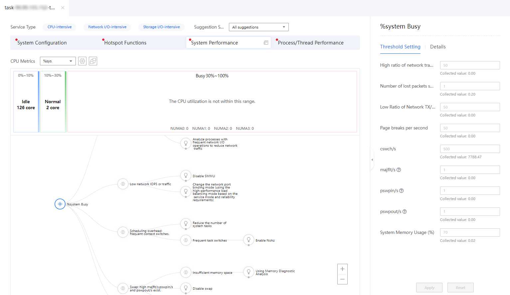
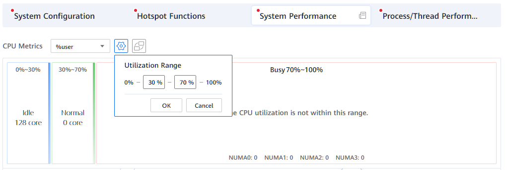
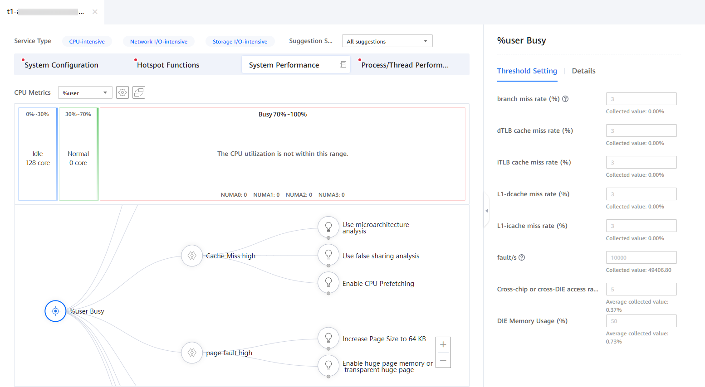
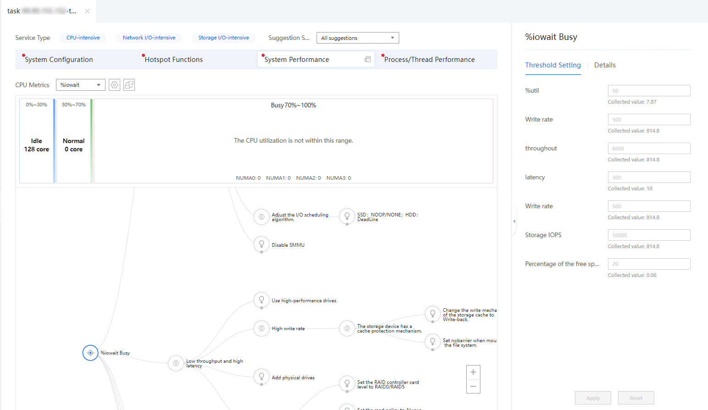
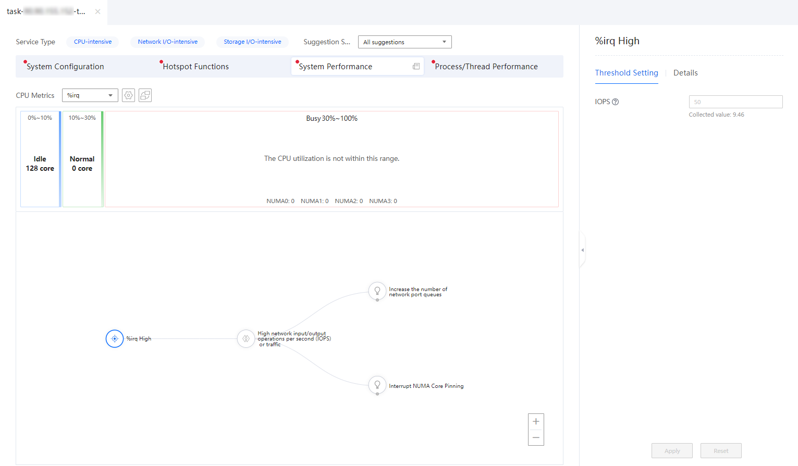
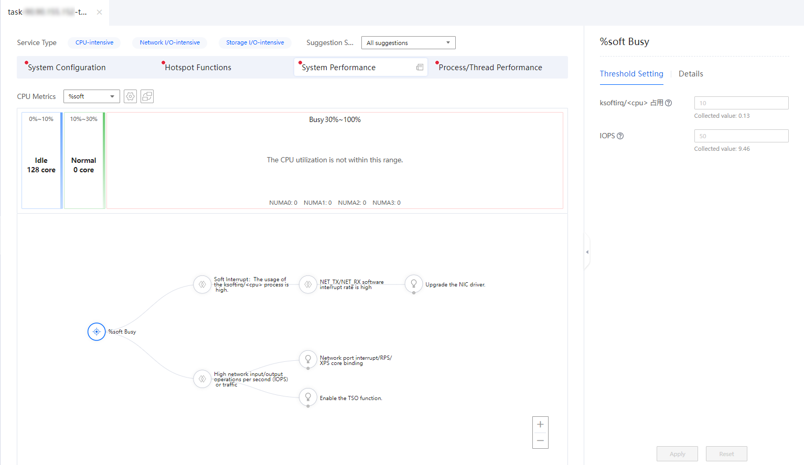
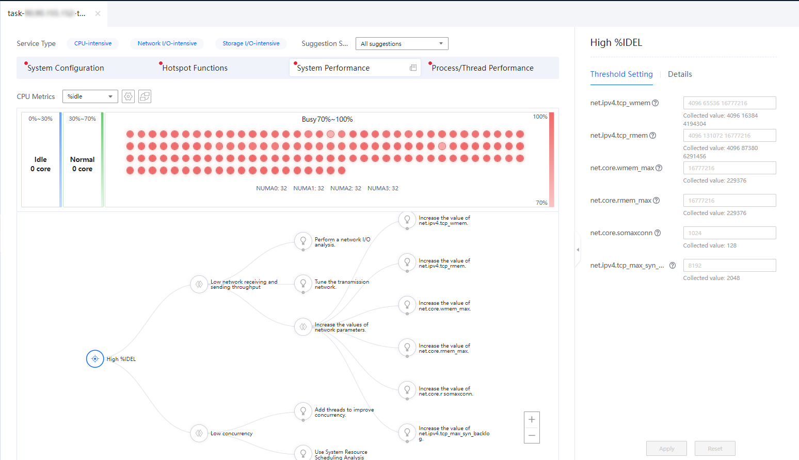
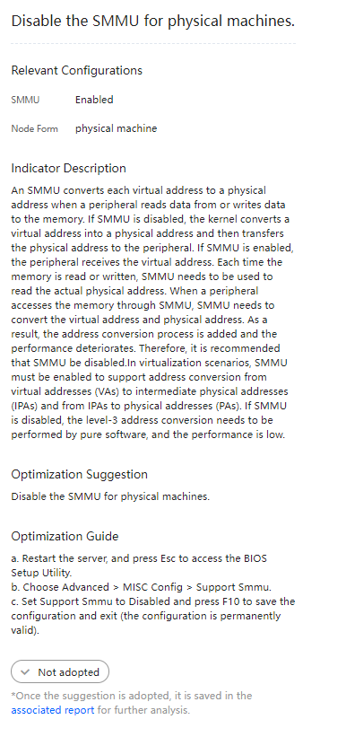
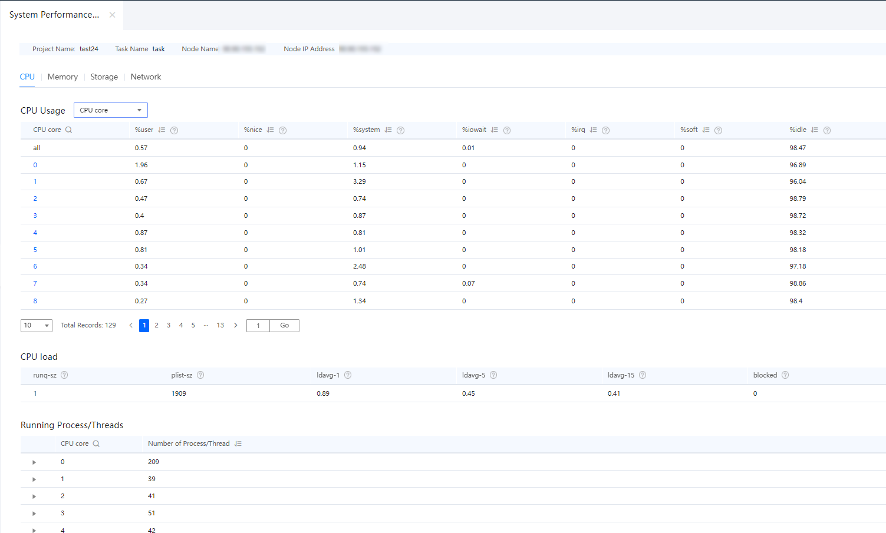

Prerequisites
An analysis task has been created and the analysis is complete.
Procedure
- In the Project Management area, click
 before the target project and analysis task.
before the target project and analysis task.The node list is displayed.
- Click the name of the target node to view the analysis result.
The analysis result page is displayed.
Figure 1 Analysis result page
- (Optional) Select one or more service types.
- Select the service types as required. Possible options are CPU-intensive, Network I/O-intensive, or Storage I/O-intensive. You can select one to three service types. The text color of the selected options changes to blue. By default, all the three options are selected.
- Select the suggestion scope based on the actual situation. You can adjust the topology tree by selecting All suggestions or Threshold-filtered suggestions.Figure 2 Selecting a service type

- Click System Performance to view the corresponding analysis result.
The System Performance page is displayed.
Figure 3 System Performance page
On the System Performance page, you can perform the following operations:
- Select a CPU metric from the CPU Metrics drop-down list.Table 1 lists the optional CPU metrics.
Table 1 CPU metrics CPU Metric
Description
%sys
Percentage of CPU time occupied when the system is running in kernel mode. This metric does not include the time spent on service hardware and software interrupts.
%user
Percentage of CPU time occupied when the system is running in user mode.
%iowait
Percentage of CPU time during which the CPU is idle and waiting for storage I/O operations.
%irq
Percentage of CPU time spent on service hardware interrupts.
%soft
Percentage of CPU time spent on service software interrupts.
%idle
Percentage of CPU time during which the CPU is idle and the system has no unfinished storage I/O request.
- Click
 to set the utilization range.In the displayed Utilization Range dialog box, set the start value and end value of the range, and then click OK.Figure 4 Setting the utilization range
to set the utilization range.In the displayed Utilization Range dialog box, set the start value and end value of the range, and then click OK.Figure 4 Setting the utilization range
 - Click
 to switch the view.
to switch the view.The Tuning Assistant provides the following two types of system performance views:
- Default view
In the default view, CPU cores are divided into the Idle, Normal, and Busy areas based on the CPU usage. You can click an area to zoom in the area. The upper part of each area displays the CPU usage range. The middle part displays the circles indicating the CPU core usage in the area. The lower part is the distribution of the CPU cores in each NUMA node.
Figure 5 Default view
- NUMA view
In the NUMA view, the CPU cores are divided into four areas: NUMA 0, NUMA 1, NUMA 2, and NUMA 3 based on the bound NUMA nodes. The upper part of each area displays the name of the bound NUMA node and the ratio of the number of CPU cores bound to the NUMA node to the total number of CPU cores.
Figure 6 NUMA view
- Default view
- Move the mouse cursor over a circle to view the NUMA bound to the CPU core, core ID, and performance data.Figure 7 Viewing the system performance data of a CPU core

- Click a circle to view details about the CPU core on the right, including information about the processes and threads running on the CPU core, hardware interrupts, and software interrupts.Figure 8 Viewing CPU core details


You can click
 to expand the details area.
to expand the details area.
- Select a CPU metric from the CPU Metrics drop-down list.
- View the topology of the system performance tuning suggestions for the CPU core in the Busy state.
- If the CPU metric is set to %sys and there are CPU cores in the Busy state, you can set the thresholds of related parameters and view details on the right of the page. The topology of system performance tuning suggestions is displayed in the lower part of the page.Figure 9 Topology of system performance tuning suggestions

Table 2 describes the parameters in the Threshold Setting area.
Table 2 Parameters in the Threshold Setting area Parameter
Description
Network IOPS (%)
IOPS indicates I/O requests the system can process per unit of time, usually, per second. I/O requests typically mean data read or write requests.
Network Packet Loss
Number of received/transmitted packets that are discarded per second because the buffer is full.
Low Sending and Receiving Traffic
Total number of received/transmitted packets per second is reduced.
System Context Switch
Context switch is to save the CPU context (CPU register and program counter) of the previous task, load the context of the new task to these registers and program counters, and then jump to the new position specified by the program counter to run the new task.
cswch/s
Number context switches of active tasks per second.
majflt/s
Number of main page faults per second. When a virtual memory address is mapped to a physical memory address, the corresponding page is in the swap partition. Such page faults are major page faults, which are generated when the memory is insufficient. Pages need to be loaded from the hard drive.
pswin/s
Total number of inward swap partition pages per second.
pswpout/s
Total number of outward swap partition pages per second.
System Memory Usage (%)
Memory usage.
Table 3 describes the main nodes in the tuning suggestion topology.
Table 3 Node description Faulty Node
Description
Network I/O: high network IOPS or traffic
IOPS indicates I/O requests the system can process per unit of time, usually, per second. I/O requests typically mean data read or write requests.
Network I/O: low network IOPS or traffic
IOPS indicates I/O requests the system can process per unit of time, usually, per second. I/O requests typically mean data read or write requests.
Scheduling overhead: large number of context switches
Context switch is to save the CPU context (CPU register and program counter) of the previous task, load the context of the new task to these registers and program counters, and then jump to the new position specified by the program counter to run the new task.
The saved context is stored in the system kernel and loaded again when the task is rescheduled and executed. In this way, the original status of the task is not affected, and the task seems to be running continuously.
NOTICE:Frequent context switches may deteriorate system performance.
SWAP: high majflt/s. pswpin/s and pswpout/s exist.
The number of main page faults generated per second is high, and there are main page faults that are swapped in and out in the system.
Process analysis: Analyze the top %system processes.
Percentage of CPU idle time.
For each issue listed in Table 3, you can click the node to view problem details and click the next-level node to view the tuning suggestions.
- If the CPU metric is set to %user and there are CPU cores in the Busy state, you can set the thresholds of related parameters and view details on the right of the page. The topology of system performance tuning suggestions is displayed in the lower part of the page.Figure 10 Topology of system performance tuning suggestions
Table 2 describes the parameters in the Threshold Setting area.
Table 4 Parameters in the Threshold Setting area Parameter
Description
branch miss rate (%)
Rate of missing CPU running instruction branches. The value is an integer ranging from 1 to 100.
dTLB cache miss rate (%)
Data translation lookaside buffer (TLB) miss rate. The value is an integer ranging from 1 to 100.
iTLB cache miss rate (%)
Instruction TLB miss rate. The value is an integer ranging from 1 to 100.
L1-dcache miss rate (%)
L1 data cache miss rate. The value is an integer ranging from 1 to 100.
L1-icache miss rate (%)
L1 instruction cache miss rate. The value is an integer ranging from 1 to 100.
fault/s
Number of missing pages per second. The value can be any positive integer.
Cross-chip or cross-die access rate (%)
Percentage of the memory accessed by the CPU across chips and dies. The value is an integer ranging from 1 to 100.
Die Memory Usage (%)
Percentage of the actual die memory usage to the maximum die memory usage. The value is an integer ranging from 1 to 100.
Table 3 describes the main nodes in the tuning suggestion topology.
Table 5 Node description Faulty Node
Description
High branch miss rate
The number of times that the instruction execution branch is missing is large.
High TLB miss rate
If the virtual memory to be accessed is not in the TLB, it is called a TLB miss.
High cache miss rate
When the arithmetic logic unit (ALU) needs to extract data from the memory, the ALU first searches for the data in the highest-level cache, and then searches for the data in the second-level cache. If data is found in the cache, it is called a hit. Otherwise, it is called a miss.
High page fault rate
A large number of pages are missing in the system.
L1-icache miss rate
The L1 instruction cache miss rate is high.
High cross-chip or cross-die access rate
The cross-chip or cross-die memory access rate of the CPU is high.
Unbalanced memory usage of each die
The memory usage of each die is unbalanced.
Analyze using the memory access analysis function
Switch to the System Profiler home page to perform memory access analysis.
Analyze top %user processes.
Switch to the Process/Thread page to view the detailed data of the TOP 50 %user processes.
For each issue listed in Table 3, you can click the node to view problem details and click the next-level node to view the tuning suggestions.
- If the CPU metric is set to %iowait and there are CPU cores in the Busy state, you can set the thresholds of related parameters and view details on the right of the page. The topology of system performance tuning suggestions is displayed in the lower part of the page.Figure 11 Topology of system performance tuning suggestions
Table 6 describes the parameters in the Threshold Setting area.
Table 6 Parameters in the Threshold Setting area Parameter
Description
iowait
Percentage of the time when the CPU is idle.
%util
Percentage of CPU time during which the CPU is idle and waiting for drive I/O operations.
Read Rate
Amount of data read per second.
Write Rate
Amount of data written per second.
Throughput/Latency
Drive I/O traffic per second, that is, the size of data written to and read from the drive
IOPS
IOPS is a critical drive performance metric. It indicates the number of I/O requests that the system can process per unit time. I/O requests are usually data read or write requests.
Percentage of the free space in the memory
When the memory usage is too high, the server performance deteriorates. In this case, you need to increase the memory idle rate.
Table 7 describes the main nodes in the tuning suggestion topology.
Table 7 Node description Faulty Node
Description
Storage I/O: high %util
Percentage of CPU time during which the CPU is idle and waiting for drive I/O operations.
If the I/O wait usage is too high, the I/O operation efficiency of some programs is low, or the performance of the device corresponding to the I/Os is low. As a result, the read and write operations take a long time.
Low throughput and high latency
Drive I/O traffic per second, that is, the size of data written to and read from the drive
Low IOPS
IOPS is a critical drive performance metric. It indicates the number of I/O requests that the system can process per unit time. I/O requests are usually data read or write requests.
In the code, the asynchronous read/write I/O interface (for example, the libaio interface) is called.
For drive files, file reading is synchronous. As a result, when a thread reads files, the thread is blocked. To improve performance and drive throughput, the program creates several independent drive read/write threads and uses mechanisms such as semaphore to implement inter-thread communication (with locks). Too many threads and locks lead to more resource preemption. As a result, the overall system performance deteriorates.
Percentage of the free space in the memory
When the memory usage is too high, the server performance deteriorates. In this case, you need to increase the memory idle rate.
Analyze processes with frequent storage I/O operations and reduce read/write operations.
Analyze processes with frequent storage I/O operations and reduce read and write operations.
For each issue listed in Table 7, you can click the node to view problem details and click the next-level node to view the tuning suggestions.
- If the CPU metric is set to %irq and there are CPU cores in the Busy state, you can set the thresholds of related parameters and view details on the right of the page. The topology of system performance tuning suggestions is displayed in the lower part of the page.Figure 12 Topology of system performance tuning suggestions
Table 8 describes the parameters in the Threshold Setting area.
Table 8 Parameters in the Threshold Setting area Parameter
Description
irq
Percentage of CPU time spent on service hardware interrupts.
IOPS
IOPS is a critical drive performance metric. It indicates the number of I/O requests that the system can process per unit time. I/O requests are usually data read or write requests.
Table 9 describes the main nodes in the tuning suggestion topology.
Table 9 Node description Faulty Node
Description
Network I/O: high network IOPS or traffic
IOPS indicates I/O requests the system can process per unit of time, usually, per second. I/O requests typically mean data read or write requests.
For each issue listed in Table 9, you can click the node to view problem details and click the next-level node to view the tuning suggestions.
- If the CPU metric is set to %soft and there are CPU cores in the Busy state, you can set the thresholds of related parameters and view details on the right of the page. The topology of system performance tuning suggestions is displayed in the lower part of the page.Figure 13 Topology of system performance tuning suggestions
Table 10 describes the parameters in the Threshold Setting area.
Table 10 Parameters in the Threshold Setting area Parameter
Description
soft
Percentage of CPU time spent on service software interrupts.
ksoftirq/<cpu> usage
CPU usage of the ksoftirq process.
IOPS
IOPS is a critical drive performance metric. It indicates the number of I/O requests that the system can process per unit time. I/O requests are usually data read or write requests.
Table 11 describes the main nodes in the tuning suggestion topology.
Table 11 Node description Faulty Node
Description
Software interrupt: high usage of the ksoftirq/<cpu>
The ksoftirqd thread in the kernel is responsible for processing software interrupts. After receiving a software interrupt, the ksoftirqd thread calls the processing functions corresponding to the software interrupt. For the software interrupt thrown by the NIC driver module, the final processing logic of ksoftirqd is to convert the data packets written by the NIC to the memory into the SKB format that can be identified by the kernel network module, and then send the data to the protocol stack for processing.
High network IOPS or traffic
The volume of data sent or received through a network, channel, or interface in a unit time is too high.
For each issue listed in Table 11, you can click the node to view problem details and click the next-level node to view the tuning suggestions.
- If the CPU metric is set to %idle and there are CPU cores in the Busy state, you can set the thresholds of related parameters and view details on the right of the page. The topology of system performance tuning suggestions is displayed in the lower part of the page.Figure 14 Topology of system performance tuning suggestions
Table 12 describes the parameters in the Threshold Setting area.
Table 12 Parameters in the Threshold Setting area Parameter
Description
idle
Percentage of CPU time during which the CPU is idle and the system has no unfinished storage I/O request.
Network sending and receiving throughput (%)
The volume of data sent or received through a network, channel, or interface in a unit time is too high.
net.ipv4.tcp_wmem
Percentage of CPU time during which the CPU is idle and the system has no unfinished storage I/O request.
net.ipv4.tcp_rmem
Size of the read buffer. The three numbers indicate the minimum, default, and maximum size of the read buffer, respectively.
net.core.wmem_max
Maximum size (in bytes) of the socket transmit buffer.
net.core.rmem_max
Maximum size of the socket receive buffer.
net.core.somaxconn
Maximum number of clients that can process data in the server, that is, the maximum number of connections.
net.ipv4.tcp_max_syn_backlog
tcp_max_syn_backlog indicates the maximum number of clients that can receive SYN (synchronization) packets.
Table 13 describes the main nodes in the tuning suggestion topology.
Table 13 Node description Faulty Node
Description
Low network sending and receiving throughput
The network sending and receiving throughput and the number of received and sent packets are low.
Low concurrency
The number of CPU cores that work at the same time is small, and the efficiency is low. Increasing the number of running cores can improve the application execution efficiency.
For each issue listed in Table 13, you can click the node to view problem details and click the next-level node to view the tuning suggestions.
- If the CPU metric is set to %sys and there are CPU cores in the Busy state, you can set the thresholds of related parameters and view details on the right of the page. The topology of system performance tuning suggestions is displayed in the lower part of the page.
- Set tuning parameters based on the tuning suggestion topology.
- View the tuning suggestion topology tree on the analysis result page. Click
 and
and  to select the corresponding tuning suggestions based on the configuration conditions.Figure 15 Tuning suggestions
to select the corresponding tuning suggestions based on the configuration conditions.Figure 15 Tuning suggestions
- View the Relevant Configurations, Indicator Description, Optimization Suggestion, and Optimization Guide on the right. Click to adopt the tuning suggestion, or cancel the adoption of the tuning suggestion by clicking it again.Figure 16 Tuning suggestion page
 - The adopted tuning suggestions are saved in the associated report. Click the associated report in the lower right corner of the page to access the associated report page.
All adopted tuning suggestions are displayed on the associated report page. You can click the task name to view the details. Click Valid or Invalid in the lower left corner to check whether the tuning suggestion meets the expectation.
Figure 17 Associated report
- View the tuning suggestion topology tree on the analysis result page. Click
- Click
 on the right of System Performance to view system performance data.Figure 18 Viewing system performance data
on the right of System Performance to view system performance data.Figure 18 Viewing system performance data
